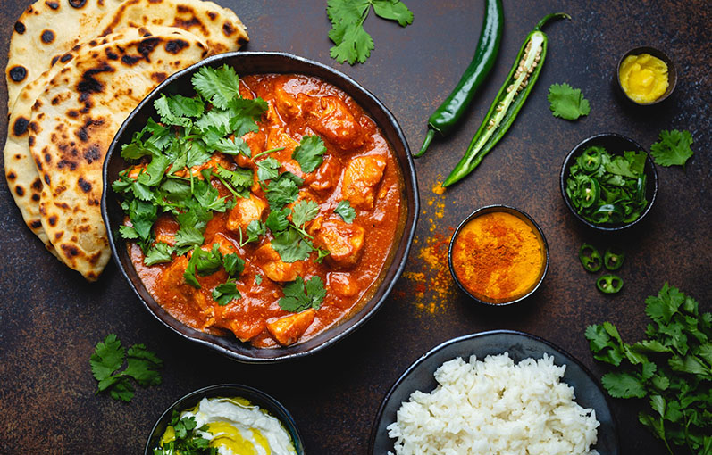
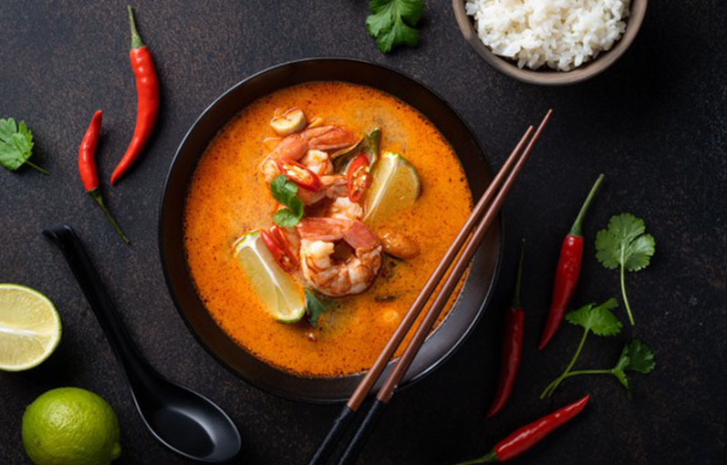
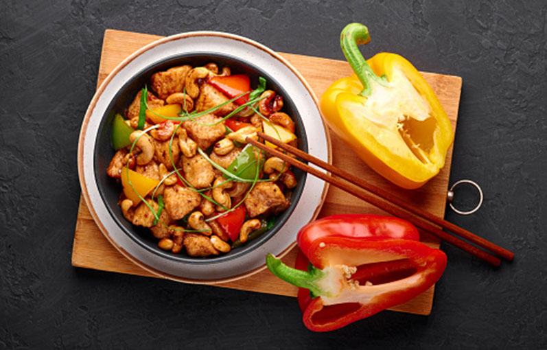
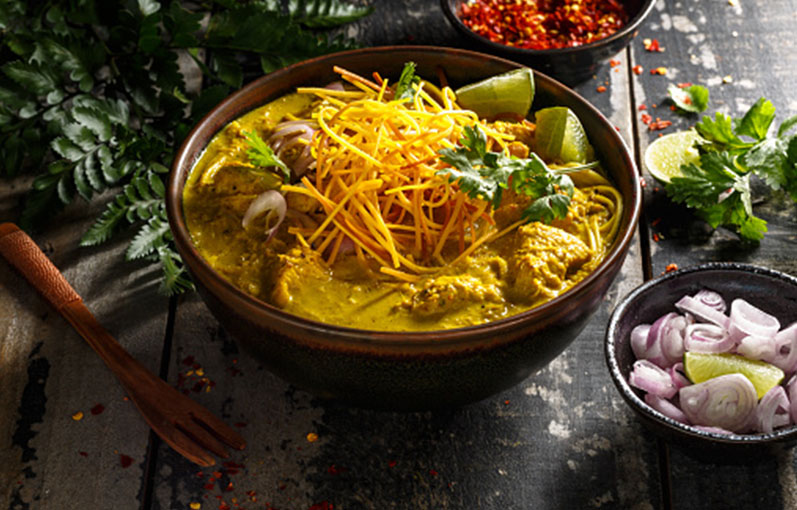
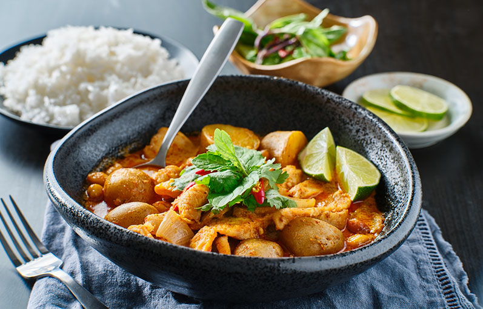

Kaeng Phet Gai
Tradicional plato de pollo y calabacín al curry rojo con un pequeño toque picante
Ver receta

Tom Yam Kung
Sopa de langostinos y leche de coco con un punto picante y muy aromatizada
Ver receta

Kai Med Ma Muang
Salteado de pollo con anarcados fritos y verduras acompañado de salsa de soja
Ver receta

Khao Soi
Fideos de huevo frescos y pollo en un rico y caliente caldo de coco y especias
Ver receta

Curry Massaman
Sabor proveniente del reino de Siam, curry suave lleno de especias y sabor
Ver receta